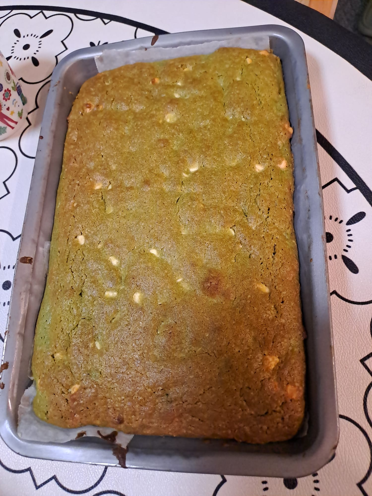

Introduction:
In this section, I will share my favourite comfort food series,the food that I always craving for
Siu mai

Siu mai is a classic Hong Kong street food staple that never fails to comfort. These iconic yellow-wrapped fish paste dumplings are steamed to perfection for 15 minutes, becoming wonderfully bouncy and tender. The real magic happens when they are drizzled with a rich, sweet soy sauce and a splash of smoky, spicy chilli oil, creating the ultimate sweet-and-savory bite
#HK #streetfood #nostalgic
Chapagetti with deep fried fish cake

Instant Chapagetti paired with golden, deep-fried Hong Kong-style fish cake. There is nothing better than diving into thick, springy ramen noodles coated in a glossy, savoury black bean sauce alongside a Sprite after a long night. The smoky, rich chajang flavour combined with the chewy, savoury crunch of the fried fish cake makes this my absolute favourite late-night wind-down meal.
#instant ramen #Chapagetti #HK style fish cake
Matcha Brownies

Nothing rounds out my comfort food series quite like a fresh batch of matcha white chocolate chip brownies. Pairing a warm, fudgy brownie with a steaming hot matcha latte creates the ultimate cozy afternoon escape.
These brownies excel in texture, featuring a crisp, paper-thin crust that snaps before revealing a dense, gooey center.
The sweet, velvety white chocolate chips perfectly cut through the earthy, robust notes of the green tea, balancing every single bite.
#matcha #brownines #cozy